Einfache 3D-Diagramme
3D-Plotting-Basic
Zusammenfassung
In Origin können Konturdiagramme und 3D-Diagramme wie Oberflächendiagramme mit Farbabbildung direkt mit XYZ-Daten erstellt werden.
Um eine glattere 3D-Oberfläche zu zeichnen, wird sehr empfohlen, eine von Origins Standardroutinen für das Gridding zu verwenden, um die XYZ-Daten in eine Matrix zu konvertieren.
Origin-Version mind. erforderlich: Origin 9.0 SR1
Was Sie lernen werden
Dieses Tutorial zeigt Ihnen, wie Sie:
- ein 3D-Diagramm mit XYZ-Daten erstellen,
- den Dialog Layerinhalt zum Hinzufügen/Entfernen von Datenzeichnungen verwenden,
- XYZ-Daten in eine Matrix konvertieren,
- den Dialog Details Zeichnung zum benutzerdefinierten Anpassen eines Diagramms verwenden.
3D-Oberflächen- und Punktdiagramm erstellen
- Wählen Sie Daten: Mit Datei verbinden: Text/CSV, um die Datei \Samples\Matrix Conversion and Gridding\XYZ Random Gaussian.dat mit den Standardeinstellungen zu importieren.
- Markieren Sie die Spalte C und klicken Sie auf die Schaltfläche Z
 auf der angezeigten Minisymbolleiste.
auf der angezeigten Minisymbolleiste. - Wählen Sie Zeichnen: 3D: 3D Farbabbildung, um ein 3D-Oberflächendiagramm mit Farbabbildung (standardmäßig Graph1) zu erstellen.
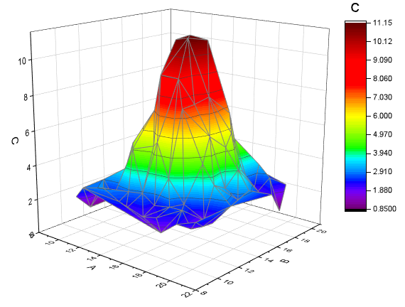
- Klicken Sie mit der rechten Maustaste auf das Layersymbol in der oberen linken Ecke des Diagramm, um den Dialog Layerinhalt zu öffnen. Klicken Sie in diesem Dialog auf die Schaltfläche
 und wählen Sie 3D-Streu-/Ankerlinien-/Vektordiagramm im Ausklappmenü.
und wählen Sie 3D-Streu-/Ankerlinien-/Vektordiagramm im Ausklappmenü.
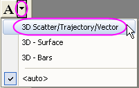
- Markieren Sie Spalte C im linken Bedienfeld und klicken Sie auf die Schaltfläche Zeichnung hinzufügen , um das 3D-Punktdiagramm zu dem Diagramm hinzuzufügen. Klicken Sie auf OK, um den Dialog zu schließen.
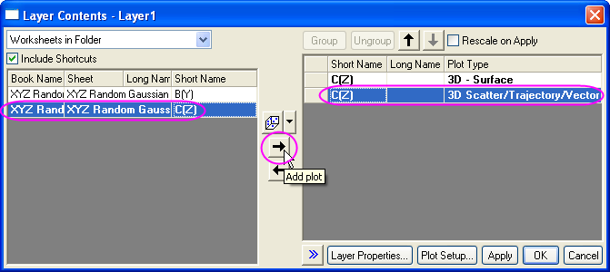
- Klicken Sie zum Öffnen des Dialogs Details Zeichnung doppelt auf das Punktdiagramm Graph 1. Setzen Sie auf der Registerkarte Symbol die Form auf Ball, die Größe auf 12 und die Farbe auf Map: Col(C) (erweitern Sie die Farbauswahl, so dass Sie Einstellungen auf der Unterregisterkarte Nach Punkten, wie unten gezeigt, vornehmen können).
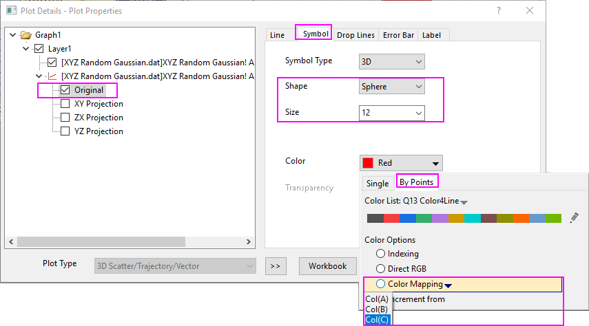
- Deaktivieren Sie auf der Registerkarte Ankerlinien das Kontrollkästchen Parallel zur Z-Achse.
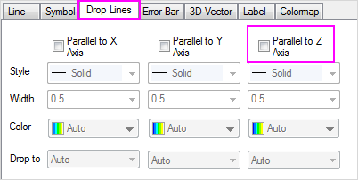
- Wechseln Sie zur Registerkarte Farbpalette/Kontur und klicken Sie auf die Spaltenüberschrift Füllung, um den Dialog zu öffnen. Wählen Sie im Dialog Füllung die Option Palette laden, klicken Sie auf die Schaltfläche Palette auswählen und wählen Sie Rainbow aus der Liste.
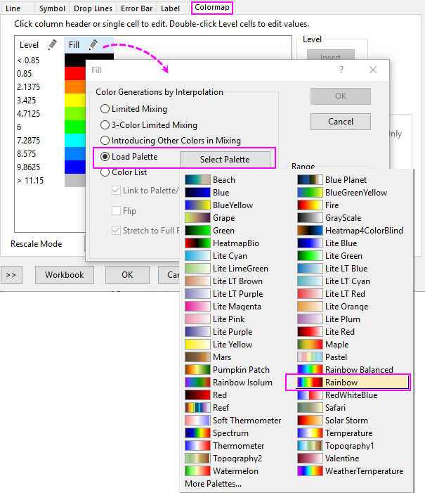 - Wählen Sie Layer1 im linken Bedienfeld des Dialogs Details Zeichnung. Wählen Sie auf der Registerkarte Beleuchtung die Option Direktional für Modus und nehmen Sie Einstellungen unter Lichtfarbe vor, wie unten im Bild gezeigt. Klicken Sie auf OK, um den Dialog zu schließen.
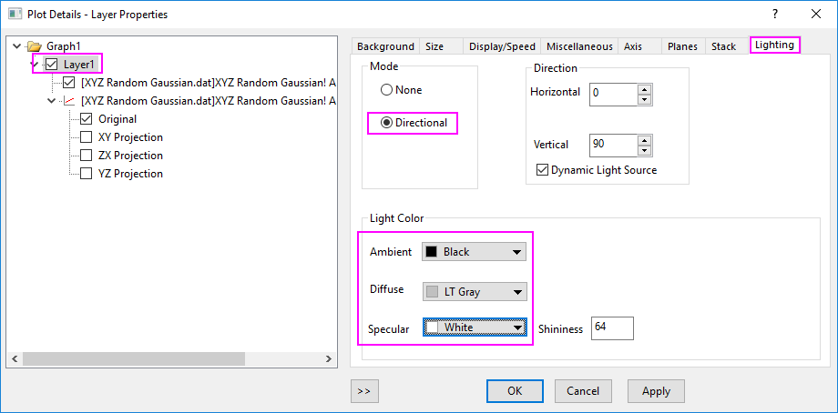
Das Diagramm sollte folgendermaßen aussehen:
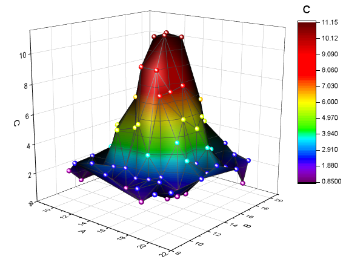
 | Drücken Sie die "S"-Taste, während Sie mit der Maus über ein 3D-OpenGL-Diagramm fahren. Der Cursor wechselt seinen Modus. Ziehen Sie Ihre Maus oder verwenden Sie die Pfeiltasten, um die Richtung der Beleuchtungsquelle zu ändern. |
3D-Oberflächendiagramm glätten
Wenn Sie eine 3D-Oberfläche erstellen, die glatter ist als das Oberflächendiagramm oben (erstellt aus XYZ-Daten), können Sie zuerst die XYZ-Daten in eine Matrix konvertieren, indem Sie das Hilfsmittel XYZ-Gridding verwenden. Verwenden Sie dann die sich ergebenden Matrixdaten, um die 3D-Oberfläche zu erstellen.
- Aktivieren Sie die Arbeitsmappe XYZ Random Gaussian erneut.
- Wählen Sie Worksheet: In Matrix konvertieren: XYZ-Gridding, um den Dialog zu öffnen. Erweitern Sie den Zweig Gridding-Einstellungen, wählen Sie auf der Auswahlliste Interpolation nach Thin Plate Spline in der Auswahlliste Griddingmethoden und Parameter und setzen Sie sowohl Spalten als auch Zeilen auf 30. Klicken Sie auf OK, um XYZ-Daten in eine Matrix zu konvertieren.
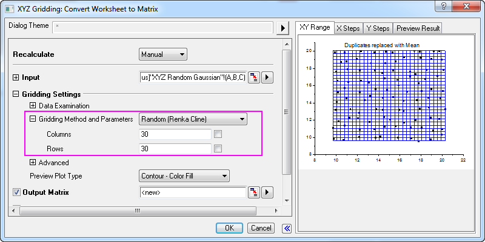
- Aktivieren Sie die Matrix und wählen Sie Zeichnen: 3D: 3D Farbabbildung, um ein anderes 3D-Diagramm, sagen wir Graph2, zu erstellen.
- Gehen Sie zurück zu Graph1, klicken Sie mit der rechten Maustaste auf ein die weiße Fläche im Layerrahmen und wählen Sie Format kopieren: Alle Stilformate im Kontextmenü aus.
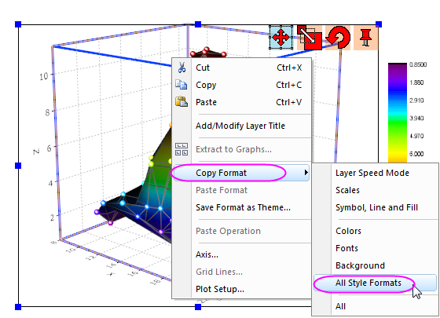
- Wechseln Sie erneut zu Graph2, klicken Sie mit der rechten Maustaste auf den Layerrahmen und wählen Sie Format einfügen im Kontextmenü.
- Wählen Sie Format: Zeichnung... im Hauptmenü, um den Dialog Details Zeichnung zu öffnen. Gehen Sie zur Registerkarte Farbpalette/Kontur, deaktivieren Sie das Kontrollkästchen Konturen aktivieren:
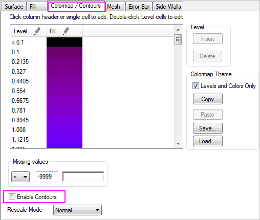
Graph2 sollte folgendermaßen aussehen:
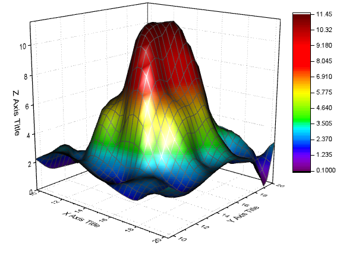